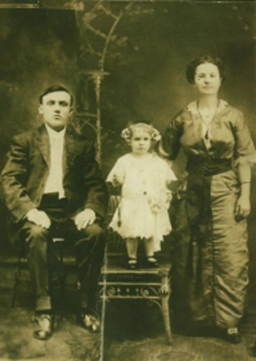

These notes are related to the family tree and family history centered around Ernestine Vrtock Brazdovic along with husbands Peter Vrtock and Paul Brazdovic who are grandparents to Paula Zelipsky Zabek, Stephen Zelipsky, John and Dan Krajcovic, Jim and Rick and Bob Mager.
Ernestine was born in 1889 and died in January 1972. Her formal name is Ernestina as marked on her gravestone (link )
A family tree described below shows her maiden name is Ernestina Jankovicova. She was daughter of Henry Jankovic and Anna Valentovicova; Anna was daughter to Juraj Valentovic and Alzbeta Dekanova. The name Jankovic/Jankovicova was typically spelled with a starting J and sometime with a starting Y, but usually seen as J.
Ernestina is from a suburb of Bratislava, Slovakia. It is not clear the exact name of that suburb - perhaps heard something that sounds phonetically like “Bolinraz” but the spelling and exact location is not available. At the time, it was a farming area and Bratislava was the closest major city. When she was a teenager, she did not want to work in the fields any longer and moved to Vienna Austria getting a job as a maid. She told of stories where she enjoyed going to a park, hearing the music, and remembered big parades with soldiers on horses associated with Franz Joseph, emperor of the Habsburg dynasty.
When Ernestine came to the United States, she lived in Pittsburgh, Pennsylvania. She married young to Peter Vrtock and had daughter Anne (July 19, 1912 - April 4, 2006) with formal name Anastasia. Here is a 1914 picture of them.

Peter died in an accident while working for the Carnegie Steel Company. They had so little money, she had to beg for donations from neighbors to pay for the funeral. Then she did housekeeping to earn money, but that meant she needed help to raise daughter Anne. So, a relative in Pittsburgh who was widowed and had two kids took Anne in, and Ernestine would visit on weekends and whenever she could.
Paul Brazdovic lived next door to where Anne was living. Paul was also born in 1889 and originally was from the Bratislava area too although it is believed he and Ernestine did not know each other back then. Paul had a wife and daughter who both died of tuberculosis. The daughter died shortly after Ernestine and Paul married.
Ernestine and Paul eventually lived on Carson Street in Pittsburgh. Later they moved to Bellaire, Ohio as Paul worked for the Carnegie Steel Works which was located where the old “donkey fields” were located roughly near 42nd street in Bellaire. A picture is
2
Source: https://www.cardcow.com/325712/bellaire-ohio-carnegie-steel-works/
They moved not too far away somewhere north of 38th Street near Trumbell or Franklin Streets in Bellaire; the timeframe would have been around 1918-1919 around the time of the Spanish flu epidemic across the world. Ernestine later claimed that she didn’t get ill and nursed the sick that lived in the multi-family house they shared. At some later time, they moved to 4535 Harrison Street in Bellaire. The duplex house is shown here:
Ernestine and Paul lived on the left side. At the time, the people on the right side also ran a barber shop (you can see a sign hanging off the porch in front of the door).
Pauline was born 4 years after Anne and Velma was born about 6 years later. Pauline: Aug 9, 1916 - Nov 15, 2005
Velma: Jan 12, 1923 - Oct 10, 1989
3
The next picture on the left is of Anne in 1918 and the one on the right is of Anne, Ernestine, and Pauline in 1920.
Paul had several strokes later in life and had a major one that paralyzed one side and made walking very difficult and he then could not speak. He died in 1960. Ernestine died in January 1972.
Here are various pictures of Ernestine and Paul Brazdovic:
Ernestine when young, year unknown year unknown
4
Velma, Paul, Anne, Ernestine,
Paula, Steve Zelipsky, Pauline 1942
Ernestine, Velma, Paul, Pauline Brazdovic
year unknown
Ernestine Brazdovic, Don Mager
November 25, 1944
Unidentifed, Paul & Ernestine Brazdovic January 1, 1945
Ernestine Brazdovic & Paul's sister 1945 who was married to a Petronek and was referred to as “tetuška” meaning aunt
5
At Velma's wedding in May 1946
Paul, Pauline, Ernestine year unknown Jim Mager and Paul Brazdovic, 1950
Left to right: Jim Mager, Ernestine Brazdovic, Paula Zelipsky, Steve Zelipsky, Rick Mager, Paul Brazdovic, John Krajcovic August 24, 1952
6
Christmas, 1954 Labor Day, 1957
September 19, 1957 year unknown year unknown
At side of 4535 Harrison St. house In alley along house in backyard Ernestine, 1964
7
Ernestine Brazdovic, Velma Mager (dog Lucky) 1967 Ernestine Brazdovic ~1970-71
Additionally, the next picture was in the “Backward Glances” of the Times-Leader newspaper indicating Paul Brazdovic in the second row of this 1920 picture of the Bellaire Slovak League.
8
Anne married Steve Zelipsky on July 19, 1935 and lived in Bellaire. Next are two wedding pictures with Steve and Anne on the right; on the left is Tony Zelipsky and Pauline Krajcovic.
followed by pictures of Anne, Paula, and Steve on Easter 1944 and Velma Brazdovic and Paula (19 months) in October 1943.
Anne and Steve lived in Bellaire at 4634 Noble Street and then moved to Bellview Heights at 65310 Three Hills Drive in Bellaire in 1957.
9
Pauline and Joe Krajcovic married in March 1946 and also lived in Bellaire (4537 Harrison St which is the other side of the duplex house where Ernestine and Paul lived). Here are two wedding pictures of Pauline and Joe (including Don Mager and Velma Brazdovic in the right picture):
Another picture is at the reception with Pauline and Joe, both sets of their parents, and Don and Velma Mager.
10
Velma and Don Mager married on May 18, 1946. Pictures are below (the little girl holding the train of Velma's gown and standing with Velma and Don is Paula Zelipsky).
The next picture is of Don and Velma with Velma's parents Paul & Ernestine Brazdovic.
11
Another wedding picture is below; the one on the left is the original and the one on the right is marked up to identify known individuals.
1 - Velma Brazdovic Mager
2 - Ernestine Brazdovic
3 - Paul Brazdovic
4 - Joe Krajcovic
5 - Steve Zelipsky
6 - Marie Mager (maid of honor and Don's sister)
Note: the picture is black & white but Marie's dress was
actually light blue and her fingernails were painted red.
7 = Paula Zelipsky
Don and Velma lived in Bellaire until 1949 at these houses (first one is 1946-1947 and second & third picture is 1947-1949)
before moving to Shadyside (4605 Highland Ave) for most of their lives.
12
Joe died of a heart attack November 1971.
Don died of a heart attack June 1972.
Steve died in April 1983.
Anne and Steve Zelipsky children:
Paula Zabek April 1, 1942- (Basil; children Vicki, Valerie)
Steve “Buddy” Zelipsky April 11, 1946- (Diane; children Gina, Lee Ann, Timothy)
Pauline and Joe Krajcovic children:
John Krajcovic Aug 2, 1947-Nov 6, 2000
Dan Krajcovic July 17, 1953- (Karen; children Sara, Matthew)
Velma and Don Mager children:
Jim Mager Mar 18, 1947- (Jeane; children Brad, Tim, Amy)
Rick Mager Aug 12, 1949- (Mary Ellen “Missy”; children Beth, Abby, Thomas) Bob Mager Aug 4, 1959- (Barb; children Annie, Jonathan, Claire)
Some pictures of sisters Anne, Pauline, and Velma:
Velma, Anne, Pauline
Anne, Velma, Pauline year unknown
(Paul in background)
year unknown Anne, baby Paula, Pauline Spring 1942
13
Pauline and Velma Easter 1944
Velma, Anne, and Pauline (Paula in background)
Easter 1944
(picture taken in Bellview heights; coincidentally, the house in the background is next to the house the Zelipsky's owned starting in 1957)
Velma, Anne, Pauline 1944
14
Pauline and Velma December 25, 1944
Pauline, Unidentified, Velma January 1, 1945
Pauline and Velma April 8, 1945
Pauline took a trip to Slovakia in 1983, and while visiting there, was provided the following family tree. We believe it is not a complete family tree but showing Pauline where she was in the generations shown (e.g., Anne and Velma are not shown).
15
Other extended family.
• Paul Brazdovic had a sister whose married name was Petronek so their children were first cousins to Anne/Pauline/Velma.
Mike Petronek with Don Mager, 1946
Msgr. Tom Petronek, ordained May 25, 1965, Diocese of Steubenville
• Paul Brazdovic had a brother Steve whose wife was named Fransca. They were parents of Paul and Anne Porter.
Side stories:
• When Don was dating Velma and Paula was nearby, Paula was afraid and would cry when Don was around. So to make friends with her, Don said he would take Paula (age 4 then) on “a date.” Eventually, he took her to Duvall's Drugstore in Bellaire where they had a soda fountain in the back of the store, and Don bought Paula a hot fudge sundae. They became good friends after that. The following is a picture of the two of them on August 17, 1947.
16
• Various families (Zelipsky, Krajcovic, Mager) all remember many picnics at Wheeling Park primarily near the playground areas but also going to the swimming pool and the “White Palace.” Picnic baskets containing fried chicken, potato salad, thermos jugs with Kool Aid, and Velma's brownies with powered sugar were often part of it. Here are various pictures:
July 4, 1949 Steve Zelipsky father and son, Jim Mager
August 24, 1952 Rick and Jim Mager, Paula and Steve Zelipsky, John Krajcovic
17
August 24, 1952
kids are Jim and Rick Mager, Paula and Steve Zelipsky, John Krajcovic August 24, 1952
18
Jim & Rick Mager, Ernestine & Paul Brazdovic Paul & Ernestine Brazdovic April 18, 1954 Easter at White Palace in Wheeling Park
• The building on the southeast corner of Guernsey and 37th Streets in Bellaire where all children/grandchildren went to school has an interesting history. It was originally a two-story building – originally St John church was on the second floor; later the grade school was on the first floor and the high school was on the second floor (Velma would have gone here) until the new high school was built in 1949. The building was converted from May of 1954 to March of 1955 to a three story school building (see picture below). Btw, Steve Zelipsky helped with the electrical work of the building transformation.
19
• Related to the house that Ernestine and Paul Brazdovic lived at 4535 Harrison Street in Bellaire, here is some further information regarding the kind of environment they and their children lived in. This house initially had no inside plumbing and there was an outhouse on the back porch. Indoor plumbing came sometime later. There was also building in the backyard. Part of it was used as an apartment rented out to Margaret Fry (believed lived there after divorcing Jim Fry; also had a son who was a Bellaire policeman). The basement of the building was used by the Brazdovics. Paul had a bench where he fixed/resoled shoes. He also made homegrown dandelion and elderberry wine there. Additionally, they did their laundry in the basement of that building and also did some canning there.
• Paul and Ernestine never had a car and either walked or relied on public transportation. For example, after Carnegie Steel closed, Paul worked in Benwood, WV (across the Ohio River from Bellaire). He walked over the Bellaire Bridge and then took a trolley to work. Separately, as every Friday was payday, he would stop and get a beer on the way home.
• Several Thanksgivings for all the extended family were held at the Zelipsky's house (main floor and basement). The last one there followed John F Kennedy’s assassination in November 1963. Several after that were in the Mager’s house.
• Don and Velma were one of the last to buy a television, and finally did so in 1954. But before then, there are some great memories visiting the Zelipskys on Tuesday nights for boxing sponsored by Pabst Blue Ribbon and Friday night boxing sponsored by Gillette Blue Blades. The Mager’s also had timely visits to Grandma to watch I Love Lucy, Sargent Bilko — The Phil Silvers Show, the Red Skelton Show, and the NIT when Duquesne won a few games. Later on in the latter 1960s, family members would often gather at Grandma Brazdovic’s house on Sunday evenings for dinner and then watch The Ed Sullivan Show.
• Related to the Zelipsky house on Noble Street, there are these additional shared memories. There were some baseball games played in the backyard – the ball was pitched toward the house and a goal was to hit the ball over the back fence but some balls were fouled off backwards and hit the house or break some glass. Also, at one time, Steve (dad) bought boxing gloves and would take Buddy and Jim down to the basement, but Anne didn’t allow them to hit each other. There were games of “electric football” where the gameboard would make this loud buzzing noise which could annoy the adults, but the kids loved playing it. Other memories include kids going to the bedroom and Paula coming over and telling scary stories.
• Ernestine never did go back to Slovakia. It is quite remarkable she left home at an early age going to Vienna and then to the United States, surely going through hard times with her new life in America yet raising a wonderful family. After World War II, she would be in contact with her old family but we do not have
20
details; assume to be mostly letters. She would send large packages of clothing back to relatives in Slovakia, and can remember Anne/Pauline/Velma doing similar years later.
Below are various pictures involving the cousins Paula, Steve, John, Dan, Jim, Rick, and Bob. First, as a reference, here is the family tree / relationships for these cousins.
Paula Zelipsky, Steve Zelipsky, Jim Mager August 6, 1947
21
Paula Zelipsky, Jim Mager, Steve Zelipsky July 18, 1948
Jim Mager, Paula Zelipsky, Steve Zelipsky July 18, 1948
Steve Zelipsky, Jim Mager
July 18, 1948 Steve Zelipsky in background, Jim Mager and son Steve Zelipsky October, 1948
Jim Mager, Paula & Steve Zelipsky October 1948
Jim Mager, Paula and Steve Zelipsky March 13, 1949
22
Jim Mager, Paula & Steve Zelipsky
at Kennywood Park, Pittsburgh August 13, 1950
Steve Zelipsky, John Krajcovic, Rick and Jim Mager Easter 1954
Jim, Rick, Steve, John Easter, 1954
Jim Mager, Paula and Steve Zelipsky
School Pictures for 1954-55
23
John & Pauline Krajcovic, Jim & Velma & Rick Mager October 28, 1956
Jim Mager, Steve & Paula Zelipsky, Dan & John Krajcovic, Rick Mager Oct 28, 1956
Dan & John Krajcovic, Rick & Jim Mager, October 28, 1956
24
Rick Mager, Dan Krajcovic, Paula Zabek & Steve Zelipsky, Jim & Bob Mager April 2006
Jim Mager, Dan Krajcovic, Paula Zabek, Rick & Bob Mager October 19, 2019
25
The following table summarizes the family tree starting with Ernestine Vrtock Brazdovic, Peter Vrtock, and Paul Brazdovic. The information is as of March, 2023.
Name Called Name Born Deceased Father Mother Marriage Children Ernestina Jankovicova Vrtock Brazdovic Ernestine 1889 Jan 1972 Henry Jankovic Anna Valentovicova Peter Vrtock Anastasia (Anne) Agnes Paul Brazdovic Pauline C
Velma Cecilia
Peter Vrtock Ernestina Jankovicova Anastasia (Anne) Agnes Paul Brazdovic Paul 1889 1960 Ernestina Jankovicova Pauline C Velma Cecilia
Anastasia Agnes Vrtock Zelipsky Anne July 19, 1912 April 4, 2006 Peter Vrtock Ernestina Jankovicoca Steve Zelipsky Paula Steve
Pauline C Brazdovic Krajcovic Pauline Aug 9, 1916 Nov 15, 2005 Paul Brazdovic Ernestina Jankovicoca Joe Krajcovic John J Daniel
Velma Cecilia Brazdovic Mager Velma Jan 12, 1923 Oct 10, 1989 Paul Brazdovic Ernestina Jankovicoca Donald Joseph Mager James Joseph Richard Donald
Robert
Paula Jean Zelipsky Zabek Paula Apr 1, 1942 Steve Zelipsky Anne Vrtock Basil Zabek Vicki Valerie
Stephen Zelipsky Steve or Buddy Apr 11, 1946 Steve Zelipsky Anne Vrtock Diane Fry Gina Lee Ann
Timothy
John J Krajcovic John Aug 2, 1947 Nov 6, 2000 Joe Krajcovic Pauline Brazdovic
Daniel Krajcovic Dan July 17, 1953 Joe Krajcovic Pauline Brazdovic Karen Kaluger Sara Matthew
James Joseph Mager Jim Mar 18, 1947 Don Mager Velma Brazdovic Regina (Jeane) Butch James Bradley (Brad) Timothy Alan
Amy Kristen
Richard Donald Mager Rick Aug 12, 1949 Don Mager Velma Brazdovic Mary Ellen (Missy) Coyne Bethany Patricia Abigail L (Abby)
Thomas
Robert Mager Bob Aug 4, 1959 Don Mager Velma Brazdovic Barbara Joan Lockhart Anne (Annie) Catherine Jonathan Paul
Claire Elizabeth
Vicki Zabek Hamilton Vicki June 21, 1969 Basic Zabek Paula Zelipsky Zabek Bill Hamilton Valerie Zabek Hinterscheid Valerie Oct 17, 1974 Basic Zabek Paula Zelipsky Zabek Eric Hinterscheid Lily Sara Krajcovic Sara Nov 16, 1988 Dan Krajcovic Karen Kaluger Krajcovic
Matthew Krajcovic Matt Jan 28, 1991 Dan Krajcovic Karen Kaluger Krajcovic Alexandria Paskell Benjamin James Bradley Mager Brad Sep 29, 1971 Jim Mager Jeane Butch Mager Denise Krombach Cullen Krombach Alyssa
Timothy Alan Mager Tim Nov 2, 1973 Jim Mager Jeane Butch Mager Jessica Shankle Gavin Elle
Maria Greco Nate
Anna
Nick
Amy Kristen Mager Amy April 22, 1975 Jim Mager Jeane Butch Mager
Bethany Patricia Mager Bethany, Beth April 30, 1981 Rick Mager Missy Coyne Mager
Abby Mager Wagner Abby Feb 15, 1985 Rick Mager Missy Coyne Mager Dan Wagner Max Avery
Thomas Mager Rick Mager Missy Coyne Mager
Anne Catherine Mager Annie Nov 19, 1997 Bob Mager Barb Lockhart Mager
Jonathan Paul Mager Jonathan, Jon Apr 15, 2000 Bob Mager Barb Lockhart Mager
Claire Elizabeth Mager Claire Apr 1, 2002 Apr 2, 2002 Bob Mager Barb Lockhart Mager
26